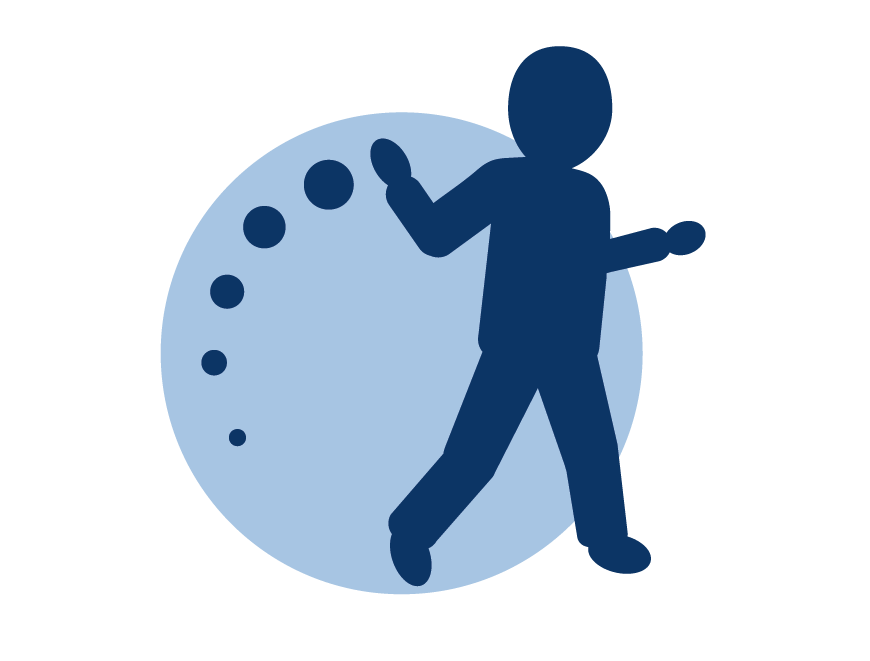

kizazi kijachoOur projects
Showing
Field experiments
Randomised evaluations of interventions delivered at scale.
Cash or Care?
Completed
Pregnancy to age two
A cluster-randomised trial testing three approaches to supporting families from pregnancy until the child turns two: a parenting programme delivered by community health workers using a digital app, an unconditional cash transfer, and the two combined — alongside a control group.
- Design
- Cluster RCT, 4 arms
- Sample
- 3,585 households
- Location
- Dodoma region, 387 communities
- Years
- Oct 2022 — Feb 2025
Information and peer support for infant nutrition in Mainland Tanzania
Planned
Details to follow as the study is still being designed.
Lab-in-the-field experiment
Measuring preferences, constraints and decision-making.
Father engagement and support to mothers: the policy elasticity of child-related spending
Completed
A lab-in-the-field allocation experiment where parents divide an endowment between themselves, their spouse, and their child, used to study how support to parents affects intra-household decisions about spending on children.
- Design
- Lab-in-the-field, embedded in an RCT
- Sample
- 1,330 parents of children under 2
- Location
- Dodoma region
- Years
- 2024
Longitudinal studies
Following the same children and households over time.
Nationally representative longitudinal study
Planned
A planned study following a nationally representative new cohort of children from pregnancy over time to better understand early child development in a low resource setting.
Implementation science
Studies on the delivery, cost and sustainability of early childhood interventions.
Implementation and sustainability of the Kizazi Kijacho trial parenting intervention
Complete
Mixed-method research combining a process evaluation (forthcoming), an endline evaluation, and a sustainability/scale-up study conducted 9–12 months after programme support ended. Evaluates what worked well and less well in terms of intervention delivery in practice, how (and why) the interventions changed caregiving practice, and what helped or hindered community health workers' delivery.
- Design
- Mixed-method
- Sample
- Quantitative data from 1,491 families participating in a Kizazi Kijacho parenting intervention, plus qualitative interviews and focus group discussions with a smaller sub-set of key stakeholders
- Location
- Dodoma region
- Years
- 2022 — 2026
Costing parenting and cash transfer interventions in an early childhood development pilot programme in Tanzania
Complete
A costing study estimating the resources required to deliver the parenting and cash-transfer interventions under the Kizazi Kijacho NGO-supported delivery model, examining the main cost drivers, how the cost burden is distributed among funding sources, and the incremental cost compared to existing services — to help inform decisions about future scale-up.
- Design
- Costing study, societal perspective
- Sample
- All Phase 1 Kizazi Kijacho intervention arms
- Location
- Dodoma region
- Years
- 2021 — 2024